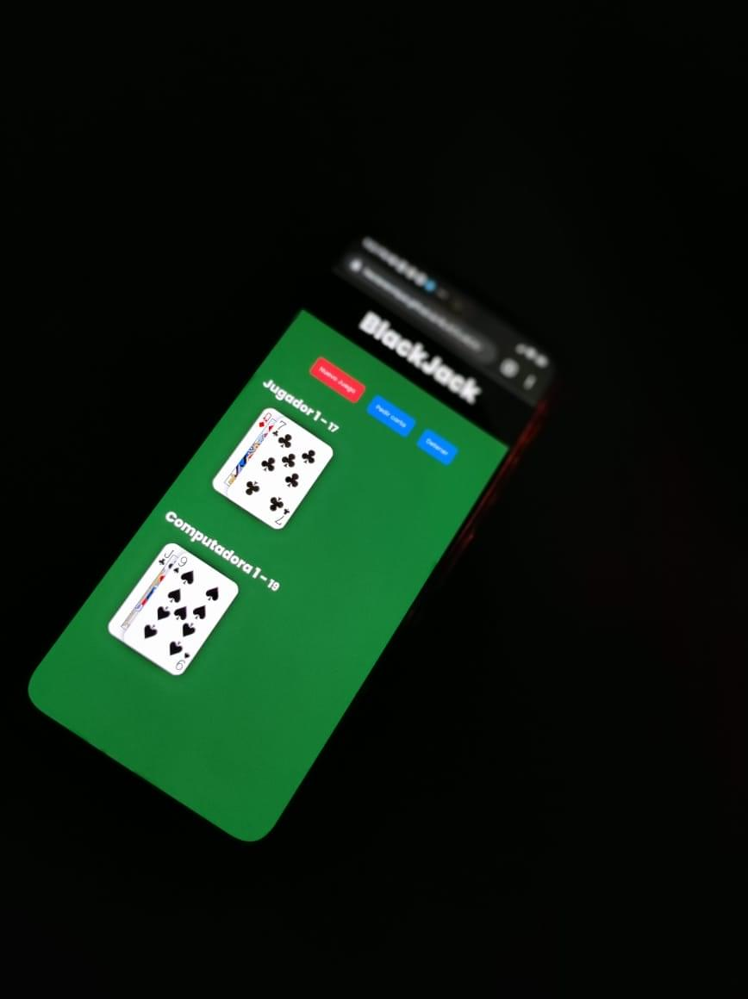

Juego creado para poder tener bien simentadas mis bases de JavaScript y es una aplicaci√≥n web que se basa en el juego popular de los casinos llamado ‚ÄúBlackJack‚Äù, en el que debes de jugar con una m√°quina, el objetivo del juego es hacer 21 puntos con las cartas. Elije cuando parar, ya que, la m√°quina intentar√° hacer todo lo posible para que pierdas ü§ñ.
Sitio web: hectorenrique.github.io/BLACKJACK/
Stack: HTML, CSS, JS

